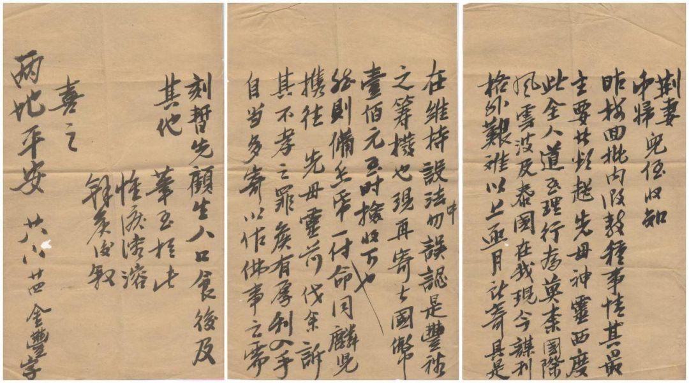
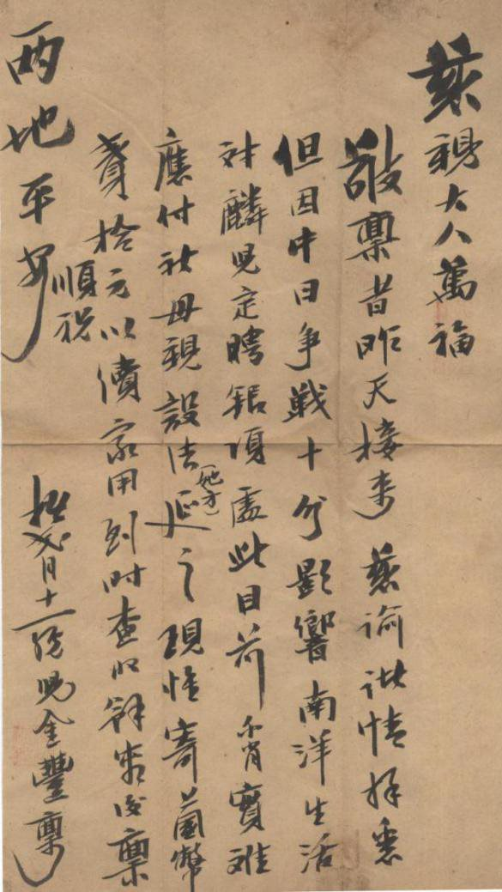

目录
首页

第 六 章
国际风云
波及南洋
抗日战争时期潮汕侨批（四）
"莫奈国际风云波及泰国，在我现今谋利格外艰难……"
1937 年以后，日本法西斯在中国陷入持久战的泥潭，在国际上日益陷于孤立。为了摆脱困境，日军大本营开始将下一个侵略目标指向东南亚。当时，漂泊东南亚的华侨在战争的阴云下虽是勉强维持，却也家批不断，饱含对家乡的思念。在汕头市档案馆馆藏侨批中，就有几封侨批记录下了这段历史：
馆 藏 原 件
廿八.八廿四 · 金丰寄荆妻弟妇儿侄书
荆妻、弟妇、儿侄收知：
昨接回批，内泐（1）数种事情，其最主要者惟超先母神灵西度，此全人道至理行为。莫奈（2）国际风云波及泰国，在我现今谋利格外艰难，以上逐月所寄具是在维持设法中，勿误认是丰裕之筹拨也。现再寄去国币壹佰元，至时捡收下也。
然则备香纸一付，命同麟儿携往先母灵前，伐（代）余诉其不孝之罪。候有厚利入手，自当多寄以作佛事之需。刻暂先顾生人口食，后及其他。
笔至于此，惟泪溶溶（3），余候后叙。
喜之，两地平安！
廿八.八廿四
金丰字
历 史 图 像

太平洋战争时期 · 南洋华侨生活影像
慈亲大人万福：
敬禀者，昨天接来慈谕，诸情拜悉。但因中日争战十分影响南洋生活，对麟儿定聘银项，处此目前，不肖实难应付。祈母亲设法她方延（4）之。现惟寄上国币贰拾元以续家用，到时查收。余容后禀。
顺祝两地平安！
拾贰月十一日
儿金丰禀
（1）泐（lè）：铭刻、书写。手泐，旧时书信常用语，如：手泐平安。
（2）莫奈：无奈。
（3）溶溶：流动的样子，此处形容泪水流动的样子。
（4）延：借，筹措。
太平洋战争期间，日军占领了东南亚及西太平洋广大地区，并在当地实行严厉的军政统制以维持其庞大的军费开支，经济统治则是其军政统治的核心内容。日本通过设立南方开发金库和发行南方券等方式，在东南亚各地建立了以南方开发金库为核心的金融统治制度。南方开发金库通过其特权发行大量货币，收夺占用大量东南亚的资金，对东南亚地区开展金融掠夺，造成东南亚人民生活格外艰难。
"军票和南方券的滥用，乃是一种'无本掠夺'，在东南亚各占领区引起了恶性的通货膨胀和物价飞涨……在军政当局的统制政策下，东南亚居民的储蓄资金被强迫转换为一张薄纸……"
—— 毕世鸿《太平洋战争期间日本对东南亚的经济统制》[D].天津：南开大学.2012
但即便是在如此困难的情况下，当时旅居南洋各地的华侨，怀着"国家兴亡，匹夫有责"的赤子之心，依然家批不断，积极响应祖国的号召，开展轰轰烈烈的抗日救亡运动，体现了华侨与祖国血浓于水的民族感情，更体现了中华民族强大的凝聚力和向心力。